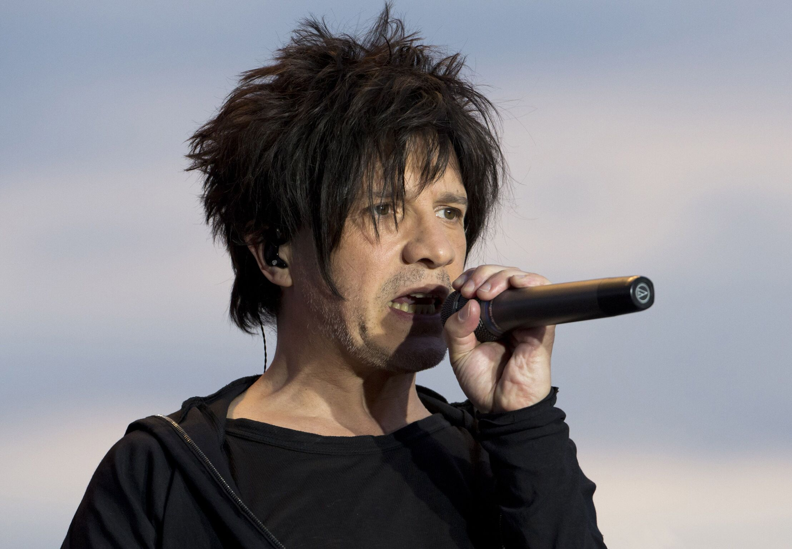
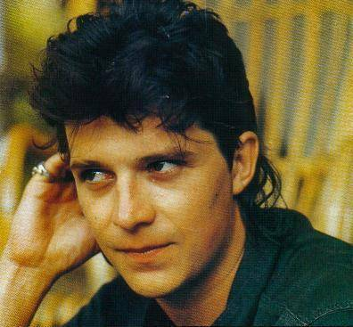
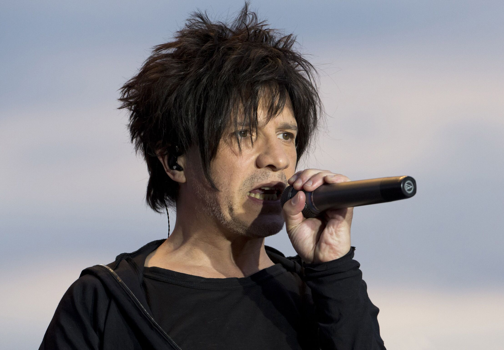
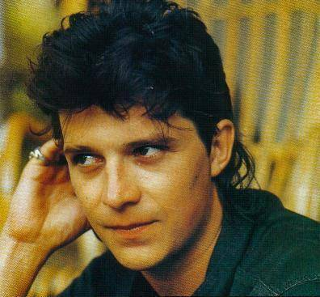
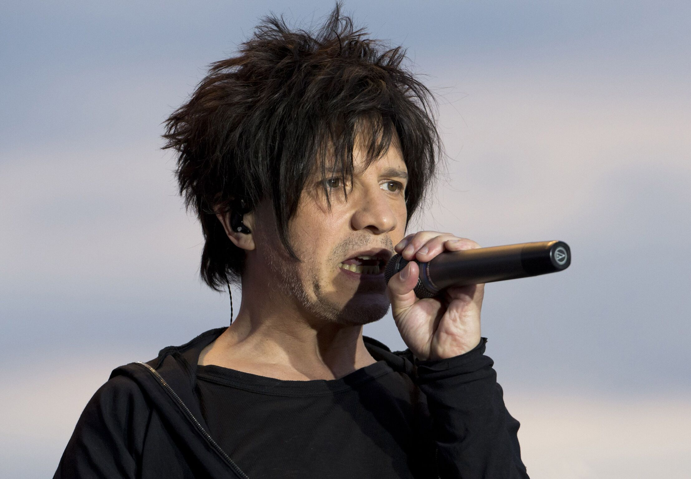
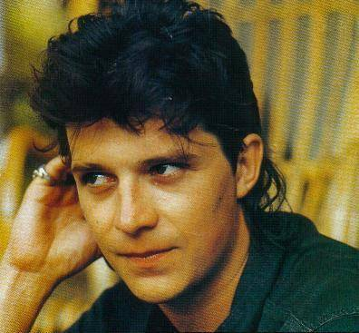

For Nicola Sirkis (singer) and Dominique Nicolas (guitarist-composer), all begins in May of 1981, when the two friends create the band. The first songs are written in four months. The first songs are written in four months. Also four months to thoroughly regulate the details of the first gig.And four months again to set up one of the most famous pop band that France has ever known.The Rose Bonbon, a famous Parisian club of the 80’s, is immediately charmed. For the occasion, Dimitri Bodianski and Stephan Sirkis (Nicola’s brother), join the band. Indochine signs its first deal with the only label that keeps Indochine as name of the band.
Their first album, L’Aventurier is released on november 15. It becomes 1983′s summer hit. 250 000 copies of the album are sold. Indochine was offered a Bus d’acier (1983), then goes back to studio to record the second album. On 1985, their third album, 3, 750 000 copies are sold through Europe. Serge Gainsbourg directs the video of Tes Yeux Noirs. The band is ready for its first Zénith (Paris)? Indochine celebrates its 5th birthday by performing at Paris Zénith. 350 000 copies of the show (CD and video) are sold.
In overall, Indochine is a French pop rock group with 13 released albums, more 70 songs and 11 live shows. By 2003, Indochine welcomes some rewards: Best French Act at the MTV’s Europe Music Awards, Album of the year (NRJ Music Awards), Best pop album of the year (Victoires de la Musique). The Paradize Tour, Acte III ends on june 3, 2003 at Bercy (Paris).

